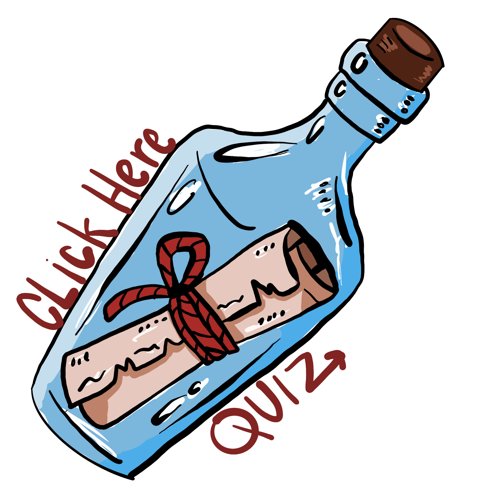

Banned Books in America
A Chronicle of Literary Censorship
About Book Banning in the United States
Book banning and censorship in the United States has a long and troubling history. A book challenge is an attempt to remove or restrict materials based on the objections of a person or group. A book ban is the actual removal of those materials. Challenges do not simply involve a person expressing a point of view; rather, they are an attempt to remove material from the curriculum or library, thereby restricting the access of others.
According to the American Library Association (ALA), there has been a dramatic increase in book challenges and bans in recent years. In 2022 alone, over 1,200 unique titles were challenged, the highest number of attempted book bans since the ALA began compiling data about censorship in libraries more than 20 years ago. These challenges predominantly target books by or about people of color and LGBTQ+ individuals.
Books are typically challenged for containing materials deemed "sexually explicit," having "offensive language," being "unsuited to age group," containing "LGBTQ+ content," featuring "religious viewpoint," discussing "violence," addressing "racism," or exploring "political viewpoint." Often, books that address difficult topics like racism, sexual abuse, or LGBTQ+ experiences are targeted precisely because they give voice to marginalized communities and validate the experiences of young readers who see themselves reflected in these stories.
The First Amendment protects freedom of speech and expression, which includes the right to read. While parents certainly have the right to guide their own children's reading, book bans in schools and libraries restrict access for all students and community members. They represent a form of censorship that limits intellectual freedom and the free exchange of ideas.
The Impact of Book Banning
Book banning has profound effects on education, literacy, and democratic values. When books are removed from libraries and classrooms, students lose access to diverse perspectives, historical contexts, and stories that might help them understand themselves and others. Censorship particularly impacts marginalized communities whose stories are most often targeted for removal.
Librarians and educators face increasing pressure and threats when defending intellectual freedom. Many report self-censorship, avoiding purchasing books that might be challenged, which further limits access to diverse literature. Teachers modify curricula to avoid controversy, and some have faced termination for refusing to remove books from their classrooms.
Resources and Further Reading:
- American Library Association - Banned & Challenged Books
- PEN America - Educational Censorship Report
- National Coalition Against Censorship
- ACLU - What is Censorship?
- Banned Books Week
"There is more than one way to burn a book. And the world is full of people running about with lit matches." — Ray Bradbury